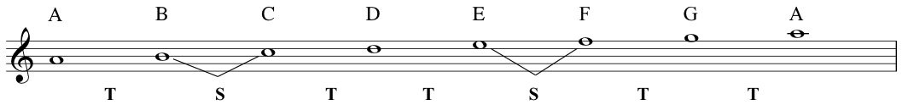
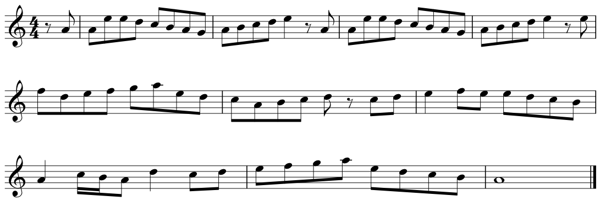
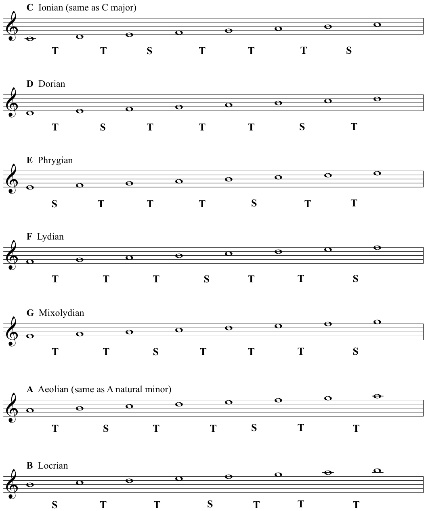

The A natural minor scale/Aeolian mode:
When the pattern of tones and semitones is different, the scale sounds different - formally it has a different quality.
Here is an example of that different quality. This is God Rest Ye Merry Gentlemen, the Christmas Carol that I played on flute, (written by an unknown composer, but probably dating back to the Seventeenth Century).
If you are new to reading notation don’t worry, you can still follow the notes of this tune - and notice how the melody keeps coming back to the A.
We also named the A natural minor the Aeolian Mode - we will now move on to the Modes. Different modes are simply found by starting our major scale on a different note- this then arithmetically rearranges the pattern of those 5 tones and 2 semitones- the following modes are all therefore also diatonic.
Here are the names as we refer to them today:
The Seven Diatonic Modes (showing the patterns of tones and semitones)
A mnemonic for remembering the modes is:
i don’t punch like Muhammad A - li.
To get a feel for the special qualities of each different mode, try playing them yourself at a keyboard. Notice the different sequence of tones and semitones.
Also try this exercise. If you know the song Scarborough Fair, find the note D; play two D’s and then an A, (the beginning of the song); keep trying to play it ’by ear’; (yes I know this is a literacy-based course, but that doesn’t mean you shouldn’t use your ears - it’s an important skill).
If you manage to get through the tune listen to how that D feels like ’home’. Try singing the scale while the song is in your memory. It might be quite hard, but playing around like this will help you to experience tonality, and it will help develop your general musicianship.
Another song in the Dorian mode is What Shall We do With a Drunken Sailor. To play this song with white notes you have to start on A and go down to a D "what shall we do with the drun ken "(that’s the D on "ken").
Music doesn’t always start on its tonic, but it often finishes on it, and this song finishes on D, which again should feel like home.
Of course you can do this with simple songs based on the major scale. You can begin Twinkle Twinkle Little Star on C in order to keep it on white notes. Frere Jacques ( also called Brother John or Are You Sleeping), starts and finishes on C, but Mary Had a Little Lamb would start on E (the 3rd).
On the other hand, you could play along with our version of She Moved Through the Fair, and see if you can ’feel’ the G as the tonic note. Just keep playing the note G and see how it 'fits' Anyway, try it - improvise on a keyboard or your own instrument!